习题 1． 1__36
如图，矩形HADC，G是AD的中点，F、C、D共线，2*DC*DF=AD^2. 求证: AF⊥HG.
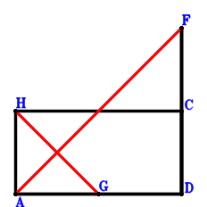
习题 2． 1__36如图，三角形ABC中，G是CB的中点，D在AB上且AB⊥CD，如果A、D、G、C四点共圆，求证：AB=CA.
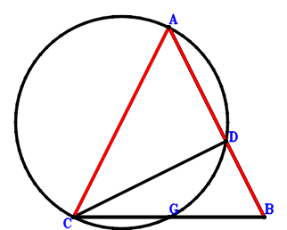
习题 3． 1__36如图，CG、DA交于点B，G是CB的中点，D、A、B共线且2*AB*DB=CB^2. 求证: D、A、G、C四点共圆.
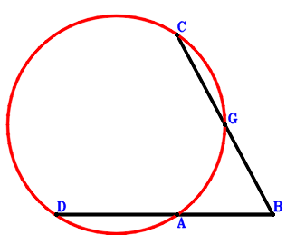
习题 4． 1__42如图，A、C、H、B四点共圆，BH、CA交于点E，平行四边形GABC，H是BE的中点. 求证: BA^2+BC^2=EG^2.
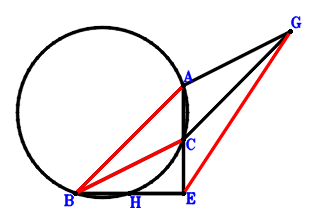
习题 5． 1__42如图，矩形DCHA，平行四边形ICAF，C、F、D共线且CA^2+FA^2=ID^2. 求证: FA⊥HG.
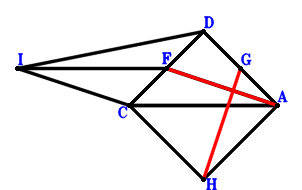
习题 6． 2__45如图，三角形ECB，P、Q在BC上，BC^2=BQ^2+PC^2，BE=BQ.求证: EC=PC.
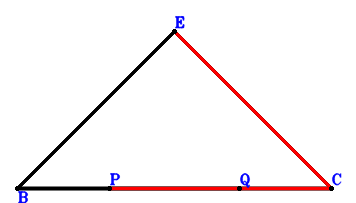
习题 7． 2__19如图，三角形ABC，G、F在线段BC上，AC=FC，BA=BG. B是IA的中点，B、H、C共线且2*BH=HC，3*AH=IC. 求证: 2*BF*GC=FG^2.
习题 8． 2__20如图所示，三角形ABC，G、F在线段CB上，CA=CF，AB=GB. I是CA的中点，C、H、B共线且2*HB=CH，2/3*IB=HA. 求证: 2*FB*CG=GF^2.
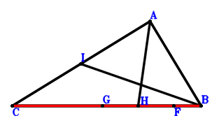
习题 9． 2__8如图，三角形ABC，G、F在线段CB上，H、I分别是AB、CA的中点，CA=CF，AB=GB，5/4*CB^2=IB^2+CH^2. 求证: 2*FB*CG=GF^2.
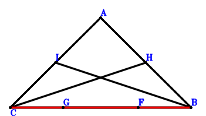
习题 10． 2__10如图，平行四边形ABHC，G是平面内一点满足GA^2+HG^2=BG^2+GC^2.E、F在线段BC上，AC=EC，BA=BF．求证: 2*BE*FC=EF^2.
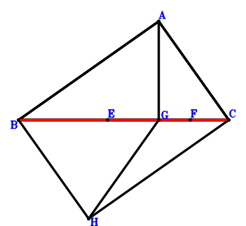
习题 11． 2__44如图，梯形ABGC，BG//AC，AG⊥GC，AG^2=BG*AC.E、F在线段BC上，BA=BF,2*BE*FC=EF^2. 求证: AC=EC.
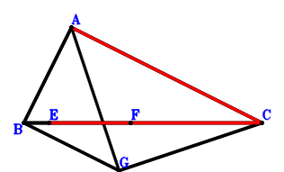
习题 12． 2__44如图，梯形GBCA中，GA//BC，BA^2=GA*BC，BC⊥BG. E、F在线段BC上，2*BE*FC=EF^2，BA=BF. 求证: AC=EC.
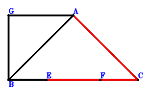
习题 13． 2__45如图，三角形ACB中，F、E、G在线段BC上，H是AC的中点，BA^2+GC^2=BG^2，AC=FC，BA=BE，2*BF*EC=FE^2. 求证: BC⊥GH.
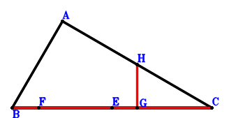
习题 14． 2__46如图，三角形ACB中，K、G、J、H在线段BC上，K是BJ的中点，I是JA的中点，KA⊥IC，AC=GC，BA=BH，2*BG*HC=GH^2. 求证: JA⊥KC.
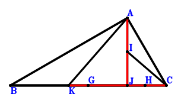
习题 15． 2__40如图，三角形ABC，G、F在线段BC上，BA=BG，2*BF*GC=FG^2. I是AC的中点，B、H、I共线且2*HI=BH，HA⊥BC，2*BA=AC. 求证: AC=FC.
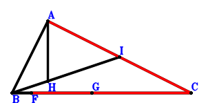
习题 16． 2__23如图，平行四边形IBAC，E、F在线段BC上，AC=EC，BA=BF. HG//BI，GA^2+HI^2=BG^2+HC^2. 求证: 2*BE*FC=EF^2.
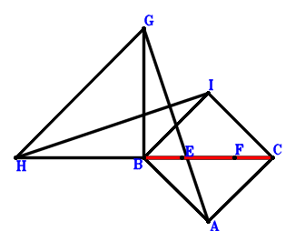
习题 17． 2__28如图，点A在以BC为直径的圆上，E、F在线段BC，AC=EC，BA=BF. 求证: 2*BE*FC=EF^2.
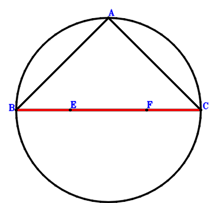
习题 18． 2__28点D在以BC为直径的圆上. 求证: BD⊥DC.
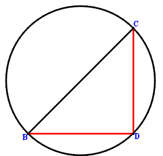
习题 19． 2__50如图，三角形ABC中，G、F在线段CB上，CA=CF，AB=GB，C是IB的中点，C、A、H共线且2*CA=AH，IA=BH. 求证: 2*FB*CG=GF^2.
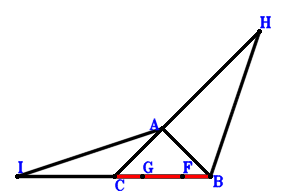
习题 20． 3__43如图，三角形ABC，D在线段GA上，GA、BC交于点D，DA⊥BC，BA⊥CA，BA=GB. 求证: C、A、B、G四点共圆.
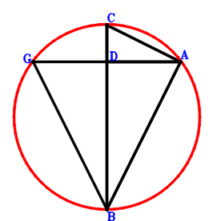
习题 21． 18__36如图，平行四边形BFHC，P是平面内一点，E、G分别是FP、CH的中点，BP⊥EG，B、I、C共线且2*BC*BI=BP^2. 求证: BC⊥PI.
习题 22． 18__30如图，平行四边形BGIC、KBPC，BP=JK，BJ^2+JC^2=JP^2，E、H分别是GP、IC的中点. 求证: BP⊥EH.
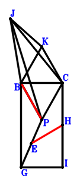
习题 23． 18__31如图，平行四边形CHFB，I、G分别是CB、CH的中点，P是平面内任意一点，E是FP的中点，J是PI的中点，PB⊥GE，C、K、P共线且3*KP=CK. 求证: JB=KI.
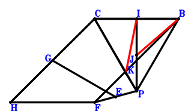
习题 24． 18__33如图，平行四边形GICB，K是平面内一点，H、P、F分别是IC、KB、GP的中点，JB⊥PB，K、C、J共线且3*CJ=KC. 求证: PB⊥HF.
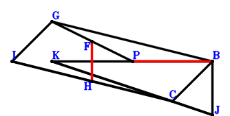
习题 25． 19__20如图，三角形ABC，B是AG的中点，I是CA的中点，C、F、B共线且2*FB=CF，2/3*IB=AF. 求证: 3*AF=CG.
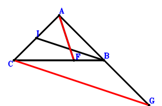
习题 26． 19__44如图，梯形ABHC，BH//AC，HA^2=BH*AC，B是GA的中点，B、F、C共线且2*BF=FC，3*FA=GC. 求证: HA⊥HC.
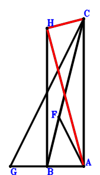
习题 27． 19__44如图，梯形CAHB，AH//CB，AB^2=AH*CB，C、F、B共线且2*FB=CF，B是AG的中点，3*AF=CG. 求证: CB⊥HB.
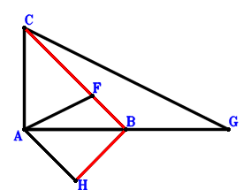
习题 28． 19__45如图，三角形AGC，B、H分别是GA、AC的中点，I在线段BC上，BC⊥IH，B、F、C共线且2*BF=FC，3*AF=GC. 求证: BA^2+IC^2=BI^2.
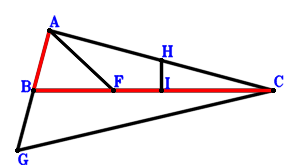
习题 29． 19__40如图，三角形ACG，I、B分别是AC、AG的中点，C、F、B共线且2*FB=CF，I、H、B共线且IH=2*HB，AG=AC，3*AF=CG. 求证: AH⊥CB.
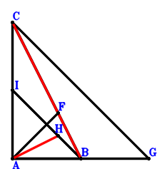
习题 30． 19__23如图，平行四边形BJCA，B、F、C共线且2*BF=FC，B是GA的中点，3*FA=GC，IH//JB. 求证: HA^2+IJ^2=HB^2+IC^2.
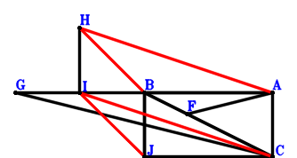
习题 31． 19__32如图，三角形ABC，B、F、C共线且2*BF=FC，B是GA的中点，3*FA=GC，H在线段IA上，CA=HC，BA=IB. 求证: IB⊥HC.
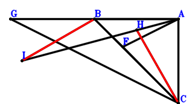
习题 32． 19__28如图，点A在以CB为直径的圆上，B是AG的中点，C、F、B共线且2*FB=CF. 求证: 3*AF=CG.
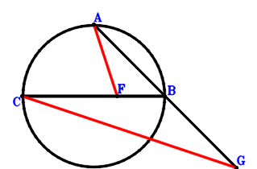
习题 33． 19__49如图，K、B、L分别是JA、AI、CB的中点，C、H、B共线且2*HB=CH，JA⊥KL，3*AH=CI. 求证: JB⊥JC.
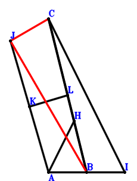
习题 34． 19__50如图，三角形ABC，C、B分别是IB、AG的中点，C、F、B共线且2*FB=CF，C、A、H共线且2*CA=AH，IA=BH. 求证: 3*AF=CG.
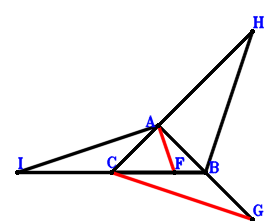
习题 35． 20__44如图，梯形HCAB，HB//CA，HA^2=HB*CA，G是CA的中点，C、F、B共线且2*FB=CF，HA⊥CH. 求证: 2/3*GB=FA.
习题 36． 20__44如图，梯形ACBH，AH//CB，AB^2=AH*CB，CB⊥BH，G是CA的中点，C、F、B共线且2*FB=CF. 求证: 2/3*GB=AF.
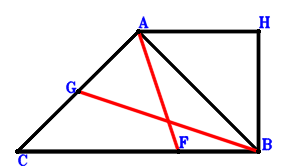
习题 37． 20__46如图，H、I分别是CA、JA的中点，J、G在线段CB上，K是JB的中点，2*GB=CG，KA⊥CI，2/3*HB=GA. 求证: JA⊥CK.
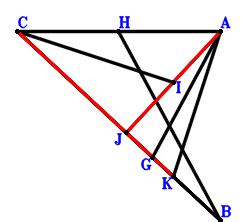
习题 38． 20__23如图，平行四边形BJCA，G是CA的中点，B、F、C共线且2*BF=FC，IH//JB，HA^2+IJ^2=HB^2+IC^2. 求证: 2/3*BG=FA.
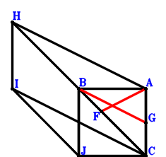
习题 39． 20__32如图，三角形ABC，G是CA的中点，B、F、C共线且2*BF=FC，IB⊥HC，H在线段IA上，CA=HC，BA=IB. 求证: 2/3*BG=FA.
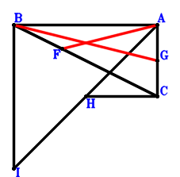
习题 40． 20__49如图，K、I、L分别JA、AC、BC的中点，JA⊥KL，B、H、C共线且2*BH=HC，2/3*BI=AH. 求证: JB⊥JC.
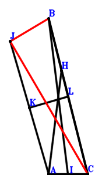
习题 41． 20__50如图，三角形BCH，C是BI的中点，H、A、C共线且2*AC=HA，G是AC的中点，B、F、C共线且2*BF=FC，AI=HB. 求证: 2/3*BG=FA.
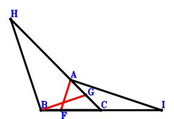
习题 42． 21__35如图，梯形ABCD，AD//BC，AB^2=BC*AD，E、F分别是AD、CB的中点，AB⊥BC. 求证: 2*EF=AD+BC.
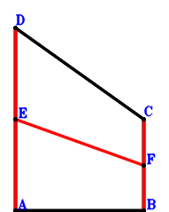
习题 43． 22__36如图，三角形BCJ，B、A、J共线，2*BA*BJ=BC^2，H在线段AC上，I是BH的中点，BA⊥CJ，2*GA=HC. 求证: BC⊥IG.
习题 44． 22__30如图，平行四边形BCAK，H在线段CA上，I是HB的中点，A在线段CG上，CB⊥IG，BJ^2+AJ^2=CJ^2，2*AG=CH. 求证: CB=JK.
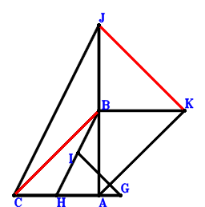
习题 45． 5__22如图，三角形ABC，H、K、B分别是AB、JB、AG的中点，I、A、J、C共线且2*IA=JC，CB⊥IK. 求证: 2*HC=CG.
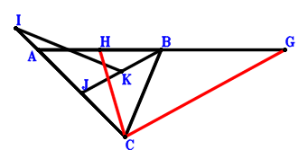
习题 46． 5__14如图，梯形CIBA，CA//IB，3*IB=CA，G是BA的中点，B是FA的中点，HA⊥BC，I、H、C共线且2/3*HC=IH. 求证: 2*GC=FC.
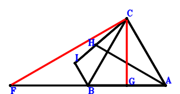
习题 47． 5__36如图，三角形CBA，G、B是AB、AF的中点，H、A、B共线且2*AB*HB=CB^2，AB⊥HC. 求证: 2*CG=CF.
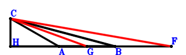
习题 48． 5__30如图，平行四边形CAJB，H是AB的中点，B是AG的中点，CB=JI，BI^2+AI^2=CI^2. 求证: 2*CH=CG.
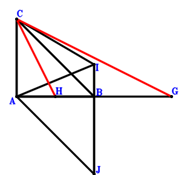
习题 49． 5__33如图，三角形CBA，G、B、C分别是AB、AF、IB的中点，I、A、H共线且3*AH=IA，2*CG=CF. 求证: CB⊥HB.
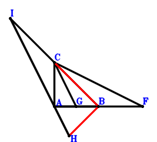
习题 50． 14__22如图，梯形HDAB，DA//HB，3*HB=DA，J在线段DA上，K是JB的中点，A在线段DI上，2*AI=DJ，DB⊥KI，D、G、H共线且2/3*DG=GH. 求证: GA⊥DB.
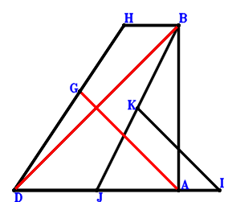
习题 51． 14__36如图，梯形DABF，DA//FB，3*FB=DA，G、A、B共线，2*AB*GB=DB^2，AB⊥GD，D、E、F共线，2/3*DE=EF. 求证: AE⊥DB.
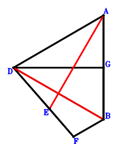
习题 52． 14__33如图，梯形ADGB，DA//GB，3*GB=DA，D是IB的中点，I、A、H共线且3*AH=IA，DB⊥BH，D、F、G共线且2/3*DF=FG. 求证: FA⊥DB.
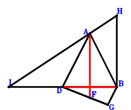
习题 53． 7__40如图，矩形HBAD，K、B、A是的AD、IA、BG的中点，B、J、K共线且2*BJ=JK，ID⊥HG. 求证: JA⊥BD.
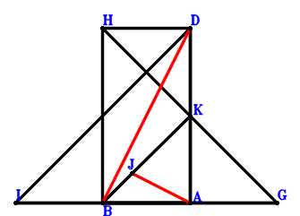
习题 54． 8__19如图，三角形ABC，G、F、A是BC、CA、CI的中点，B、H、A共线且2*HA=BH，3*CH=BI. 求证: 5/4*BA^2=GA^2+BF^2.
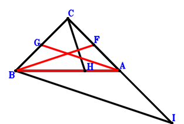
习题 55． 8__10如图，平行四边形IACB，F、G是CB、AC的中点，H是平面内一点满足AH^2+HB^2=HC^2+IH^2.求证: 5/4*AB^2=AF^2+GB^2.
习题 56． 8__44如图，梯形BHAC，AH//CB，G、F分别是CB、AC的中点，5/4*AB^2=AG^2+FB^2，AH*CB=HC^2. 求证: HB⊥HC.
习题 57． 8__44如图，梯形CBAH，CH//BA，BA⊥AH，G、F分别是BC、CA的中点，5/4*BA^2=GA^2+BF^2. 求证: CA^2=CH*BA.
习题 58． 8__45如图，三角形ABC，G、F分别是CB、AC的中点，5/4*AB^2=AG^2+FB^2，I在线段AB上，AC^2+IB^2=AI^2. 求证: AB⊥IG.
习题 59． 8__46如图，三角形ABC，G、H分别是AC、CB的中点，5/4*AB^2=AH^2+GB^2．J在线段AB上，I是JC的中点，K是AJ的中点，IB⊥KC. 求证: KB⊥JC.
习题 60． 8__40如图，三角形ABC，G、F分别是CB、CA的中点，5/4*BA^2=GA^2+BF^2，G、H、A共线且GH=2*HA，BA⊥CH. 求证: 2*CA=CB.
习题 61． 8__23如图，平行四边形AJBC，G、F是BC、AC的中点，5/4*AB^2=AG^2+FB^2，IH//JA. 求证: HA^2+IB^2=HC^2+IJ^2.
习题 62． 8__32如图，三角形ABC，F、G分别是BC、CA的中点，5/4*BA^2=FA^2+BG^2，HA⊥BI，I在线段CH上，BC=BI. 求证: CA=HA.
习题 63． 8__28如图，点C在以AB为直径的圆上，G、F是CB、AC的中点. 求证: 5/4*AB^2=AG^2+FB^2.
习题 64． 8__49如图，三角形ABC，I、H、K、L分别是CB、AC、JC、AB的中点，JA⊥JB，JC⊥KL. 求证: 5/4*AB^2=AI^2+HB^2.
习题 65． 8__50如图，三角形ABC，G、F分别是CB、AC的中点，5/4*AB^2=AG^2+FB^2. B是AI的中点，H、C、B共线且2*CB=HC. 求证: HA=CI.
习题 66． 9__39如图，AG、CD交于点B，BA*BG=BC*BD，BA⊥GD. 求证: CA⊥BD.
习题 67． 9__21如图，梯形ABCD，AD//BC，I、H、J、G分别是AD、AB、BC、DC的中点，2*IJ=AD+BC，F在线段BC上，BF=HG. 求证: DF=HG.
习题 68． 9__11如图，梯形ABCD，AD//BC，F在线段BC上，BA^2+DC^2=AD^2+BC^2，H是BA的中点，G是DC的中点，BF=HG. 求证: DF=HG.
习题 69． 9__35如图，梯形ABCD，DA//CB，AB⊥CB，AB^2=CB*DA，H、G分别是AB、DC的中点，F在线段CB上，FB=GH. 求证: DF=GH.
习题 70． 10__46如图，平行四边形CHAB，K、J、I分别是是JA、CA、JB的中点，KB⊥CI，JB⊥CK，G是平面内任意一点. 求证: AG^2+CG^2=BG^2+HG^2.
习题 71． 10__28如图，点B在以AC为直径的圆上，平行四边形FABC，E是平面内任意一点，求证: AE^2+EC^2=EB^2+FE^2.
习题 72． 11__21如图，四边形ABCD，DA//CB，AB^2+DC^2=DA^2+CB^2，E、F分别是DA、CB的中点. 求证: 2*EF=DA+CB.
习题 73． 11__35如图，梯形DABC，AD//BC，AB^2=BC*AD，AB⊥BC. 求证: AB^2+DC^2=AD^2+BC^2.
习题 74． 11__47如图，由三角形ACH的两边向外做正方形IACK、CHBJ，HA⊥DC，HC⊥ID，四边形DABC. 求证: AB^2+DC^2=AD^2+BC^2.
习题 75． 11__38如图，由三角形GCA的两边向外做正三角形DCG、ACB，GA⊥BC. 求证: AB^2+DC^2=AD^2+BC^2.
习题 76． 11__27如图，B、D、G、H四点共圆，HB、GD交于点A，C是三角形HGA的外心，四边形ABCD. 求证: AB^2+DC^2=AD^2+BC^2.
习题 77． 12__49如图，梯形CBAD，BA//CD，AD=CB，H、I分别是CD、AB的中点. 求证: CD⊥IH.
习题 78． 12__49如图，梯形ABCD，AB//CD，CD比AB长，DA=CB，DA⊥DB. 求证: CA⊥CB.
习题 79． 12__49如图，梯形ABCD，BA//CD，CA^2=DA^2+BA*CD，H、I分别是CD、BA的中点. 求证: CD⊥HI.
习题 80． 12__49
如图，梯形ABCD，BA//CD，CA^2=DA^2+BA*CD，DA⊥DB. 求证: CA⊥CB.
习题 81． 13__43如图，三角形ABC，P在线段CB上，A、P、D共线，AB^2=AP*AD，AB^2=AP^2+PB*CP. 求证: C、D、B、A四点共圆.
习题 82． 13__25如图，P、C、F、A四点共圆，P在线段BC上，A在线段BF上，BP=PF. 求证: BA^2=AP^2+BP*PC.
习题 83． 43__48如图，D在线段OC上，B在线段OA上，AC⊥OD，OA⊥BD. 求证: D、C、A、B四点共圆.
习题 84． 44__45如图，梯形BCEA，EA//CB，EA*CB=EB^2，G在线段CA上，F是CB的中点，CA⊥GF，EB⊥CE. 求证: BA^2+CG^2=GA^2.
习题 85． 44__46如图，梯形CGAB，GA//CB，GA*CB=GB^2，I在线段CA上，J、H分别是IA、IB的中点，GB⊥CG，JB⊥CH. 求证: IB⊥CJ.
习题 86． 44__49如图，梯形CHAB，AH//BC，AH*BC=HB^2，J、K分别是IB、AC的中点，IA⊥IC，IB⊥JK. 求证: HB⊥HC.
习题 87． 44__50如图，梯形AFCB，FA//CB，C是HA的中点，C、B、G共线且2*CB=BG，FB⊥CF，AG=HB. 求证: FA*CB=FB^2.
习题 88． 44__45如图，梯形EBCD，ED//BC，BD^2=ED*BC，G在线段BC上，F是DC的中点，BC⊥GF，BD^2+GC^2=BG^2. 求证: BC⊥BE.
习题 89． 44__46如图，梯形GBCD，GD//BC，I在线段BC上，J、H分别是BI、DI的中点，JC⊥ID，BC⊥BG，BD^2=GD*BC. 求证: HC⊥JD.
习题 90． 44__49如图，梯形DCBH，DH//CB，I、J分别是KD、CB的中点，KB⊥CK，KD⊥IJ，DB^2=DH*CB. 求证: CB⊥BH.
习题 91． 44__50如图，梯形CDFB，DF//CB，C是HB的中点，C、D、G共线且2*DC=GD，GB=HD，DB^2=DF*CB. 求证: CB⊥FB.
习题 92． 45__46如图，G、H分别是BA、BC的中点，HA⊥DG，AC⊥DA，AC^2+DB^2=DA^2. 求证: AC⊥BC.
习题 93． 45__46如图，H、J在线段AB上，G、K、I分别是CB、AJ、JC的中点，AB⊥HG，IB⊥KC，AC^2+HB^2=AH^2. 求证: KB⊥JC.
习题 94． 45__49如图，L、I在线段AB上，K、H分别是JC、CB的中点，AB⊥IH，AJ⊥JB，AC^2+IB^2=AI^2. 求证: JC⊥KL.
习题 95． 36__41如图，三角形ABC，角DBA=60度，CB^2=DB*AB，AB⊥DC. 求证: AB=CA.
习题 96． 36__41如图，三角形ABC，G、F分别是DA、CB的中点，AB⊥CD，4*FG^2=CD^2+CA^2. 求证: AB=CA.
习题 97． 36__42如图，平行四边形FACD，BA⊥CD，AC^2+CD^2=BF^2. 求证: BA=AC.
习题 98． 36__47如图，沿三角形ABC的两边向外做正方形CAIH、JBCK，B、A、D共线且2*BA*BD=BC^2，AC⊥JD，BC⊥ID. 求证: BA=AC.
习题 99． 46__49如图，L、H、M、J是KA、AI、CB、IB的中点，IA⊥CJ，KB⊥CK，KA⊥ML. 求证: JA⊥CH.
习题 100． 46__50如图，三角形ACH，G在线段CB上，I、H、C分别是AG、GB、JB的中点，K、A、C共线且2*CA=AK，AH⊥CI，JA=KB. 求证: AG⊥CH.
习题 101． 47__48如图，AD、CG交于点B，AC⊥EB，AB⊥EG，CB⊥DE. 求证: AB*DB=GB*CB.
习题 102． 37__47如图，沿三角形BCD的两边向外做正方形LDBJ、DKIC，H在线段DB上，E在线段HC上，DC⊥EJ，DH=HE，HB=HC. 求证: DB⊥IE.
习题 103． 39__47如图，由三角形BAC的两边向外做正方形HBAD、IGCB，GA、CD交于点B. 求证: BA*GB=CB*BD.
习题 104． 39__38如图，FA、ED交于点B，DA⊥EB，AB*FB=DB*EB. 求证: AB⊥EF.
习题 105． 39__38如图，由三角形ADB的两边向外做正三角形BDF、ABE，AF、ED交于点B. 求证: AB*BF=BD*EB.
习题 106． 39__47如图，由三角形BEA的两边向外做正方形EAJI、KBEL，H在线段BE上，A在线段BF上，BE⊥JF，AE⊥KF，BA*BF=BH*BE. 求证: 点H在以BA为直径的圆上.
习题 107． 38__47如图，由三角形DBA的两边向外做正方形AEHB、FDBI，DA⊥EB. 求证: AB⊥EF.
习题 108． 38__47如图，由三角形CBA的两边向外做正三角形GBC、ABD，CB⊥DH，AB⊥HG. 求证: AC⊥HB.
习题 109． 40__44如图，梯形HBCA，HA//BC，G是BC的中点，G、F、A共线且GF=2*FA，BA⊥FC，BH⊥HC，HA*BC=HC^2. 求证: 2*CA=BC.
习题 110． 40__44如图，梯形HCBA，CH//BA，G是BC的中点，G、F、A共线且GF=2*FA，BA⊥CF，BA⊥HA，CA^2=CH*BA. 求证: 2*CA=BC.
习题 111． 40__45如图，三角形ABC，G是CB的中点，A、F、G共线且FG=2*AF，I在线段AB上，AB⊥CF，AB⊥GI，AC^2+IB^2=AI^2. 求证: 2*AC=CB.
习题 112． 40__49如图，三角形ABC，I、L、K分别是CB、AB、JC的中点，A、H、I共线且HI=2*AH，AB⊥HC，JA⊥JB，JC⊥KL. 求证: 2*AC=CB.
习题 113． 41__42如图，G、H分别是CA、DB的中点，C、A、B共线且2*AB*CB=BD^2. 求证: 4*GH^2=AD^2+CD^2.
习题 114． 41__42如图，平行四边形BOCF，角BAC=60度，BA*AC=OA^2. 求证: FA^2=OC^2+BO^2.
习题 115． 23__44如图，平行四边形GABC，梯形CHAB，HB⊥HC，AH*BC=HB^2，EF//AG. 求证: FA^2+EC^2=FB^2+EG^2.
习题 116． 23__44如图，平行四边形CBAG，梯形CBHA，BH//CA，EF//AG，BA^2=BH*CA，EA^2+CF^2=BE^2+FG^2. 求证: CA⊥HA.
习题 117． 23__45如图，平行四边形GABC，H是BC的中点，I在线段AC上，AB^2+IC^2=AI^2，FE//AG，AE^2+FC^2=EB^2+FG^2. 求证: AC⊥HI.
习题 118． 23__46如图，平行四边形AICB，K在线段AC上，L、J分别是AK、KB的中点，LB⊥JC，HG//IA，GA^2+HC^2=GB^2+HI^2. 求证: KB⊥LC.
习题 119． 23__40如图，平行四边形BCHA，2*BA=CB，FG//HA，FA^2+GC^2=FB^2+GH^2.J是CB的中点，J、I、A共线，JI=2*IA. 求证: CA⊥BI.
习题 120． 23__32如图，平行四边形HABC，GF//AH，FA^2+GC^2=FB^2+GH^2.I在线段JB上，JA⊥IC，BC=IC. 求证: AB=JA.
习题 121． 23__28如图，平行四边形AGCB，点B在以AC为直径的圆上，FE//GA. 求证: EA^2+FC^2=EB^2+FG^2.
习题 122． 23__49如图，平行四边形CBAJ，M是CA的中点，L是BK的中点，BK⊥LM，IH//AJ，HA^2+CI^2=BH^2+IJ^2. 求证: KA⊥CK.
习题 123． 23__50如图，平行四边形AHCB，C是AJ的中点，I、B、C共线且2*CB=BI，GF//HA，FA^2+GC^2=FB^2+GH^2. 求证: AI=BJ.
习题 124． 30__36如图，平行四边形BAGC，AC=CB，AE^2+EC^2=EB^2. 求证: AB=GE.
习题 125． 30__36如图，平行四边形BCGA，H、C、A共线且2*CA*HA=BA^2，CA⊥HB，AE^2+CE^2=BE^2. 求证: BA=EG.
习题 126． 30__31如图，平行四边形BCGA，H、I分别是CA、BH的中点，B、J、C共线且3*JB=CJ，AE^2+CE^2=BE^2，IA=JH. 求证: BA=GE.
习题 127． 30__33如图，平行四边形CBAH，B是JA的中点，J、C、I共线且3*CI=JC，BA=GH，AG^2+CG^2=BG^2. 求证: BA⊥AI.
习题 128． 31__36如图，三角形ABC，D、E分别是AB、CD的中点，C、F、B共线且3*FC=BF，EA=FD. 求证: BA=BC.
习题 129． 31__36如图，三角形ABC，E、F分别是AB、CE的中点，C、G、B共线且3*CG=GB，H、B、A共线且CA^2＝2*BA*HA，BA⊥HC. 求证: FA=GE.
习题 130． 31__33如图，三角形ABC，C、F、G分别是AJ、BA、CF的中点，I、B、J共线且3*BI=JB，B、H、C共线且3*HC=BH，GA=HF. 求证: CA⊥IA.
习题 131． 32__44如图，梯形CDHA，HA//DC，HA*DC=CH^2，F在线段CG上，AG⊥DF，DC=DF，CA=AG. 求证: CH⊥DH.
习题 132． 32__45如图，三角形ADC，H是CD的中点，I在线段AD上，F在线段GC上，AD⊥HI，AG⊥FD，CD=FD，AC=AG. 求证: AC^2+ID^2=AI^2.
习题 133． 32__49如图，K、L分别是JC、DA的中点，H在线段CI上，AI⊥DH，JC⊥KL，CA=AI，DC=DH. 求证: JA⊥JD.
习题 134． 32__50如图，三角形ACG，D是AI的中点，H、C、D共线且2*CD=HC，F在线段CG上，AG⊥FD，CD=FD，AC=AG. 求证: HA=CI.
习题 135． 33__36如图，三角形BCH，C是GB的中点，H、A、B共线且2*AB*HB=CB^2，AB⊥HC，G、A、F共线且3*AF=GA. 求证: CB⊥FB.
习题 136． 25__43如图，G、A、B、C四点共圆，CB、GA交于点F，F、G、A共线且BA^2=FA*GA. 求证: BA=CA.
习题 137． 25__47如图，三角形ABC，D、E分别在线段BC、AB上，AB=AC，BD=ED，BC⊥FD，BA⊥EF．求证: AC⊥BF.
习题 138． 25__47如图，三角形ABC，D、E在线段BC、BA上，BC⊥FD，BA⊥EF，BA=AC，BD=ED. 求证: AC⊥BF.
习题 139． 25__47如图，由三角形BAC的两边向外做正方形HBAD、IGCB，GA、CD交于点B. 求证: D、A、C、G四点共圆.
习题 140． 28__44如图，梯形CEAB，AE//BC，AE*BC=EB^2，点B在以AC为直径的圆上. 求证: EB⊥EC.
习题 141． 28__44如图，梯形CDEB，DE//CB，DB^2=DE*CB，点D在以CB为直径的圆上. 求证: CB⊥EB.
习题 142． 28__45如图，点C在以AB为直径的圆上，E是CB的中点，F在线段AB上，AC^2+FB^2=AF^2. 求证: AB⊥FE.
习题 143． 28__46如图，点A在以CB为直径的圆上，H在线段CB上，G、I分别是AH、HB的中点，AI⊥CG. 求证: AH⊥CI.
习题 144． 28__40如图，点C在以AB为直径的圆上，G是CB的中点，A、F、G共线且FG=2*AF，AB⊥FC. 求证: 2*AC=CB.
习题 145． 28__32如图，点C在以AD为直径的圆上，F在线段GC上，AC=GA，DC=FD. 求证: GA⊥FD.
习题 146． 28__49如图，点D、H在以BA为直径的圆上，J是BA的中点，I是HD的中点. 求证: HD⊥IJ.
习题 147． 28__50如图，点A在以BC为直径的圆上，C是BF的中点，G、A、C共线且2*AC=GA. 求证: AF=GB.